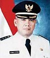
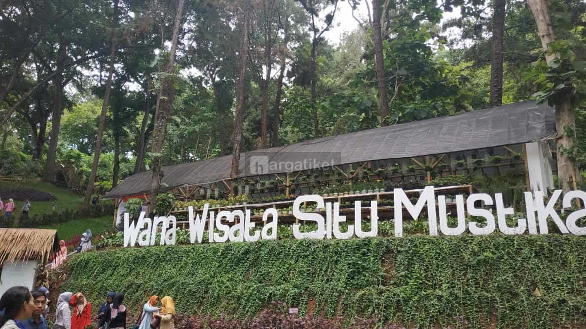
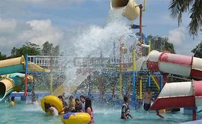
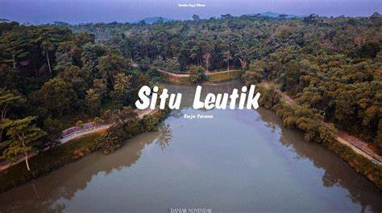

Sejarah
Sejarah Pembentukan Kota Banjar tidak terlepas dari sejarah berdirinya Pemerintah Kabupaten Ciamis di masa lalu. Rangkaian waktu perjalanan berdirinya Pemerintah Kabupaten Ciamis sampai terbentuknya Pemerintah Kota Banjar melalui tahapan-tahapan sebagai berikut :
Banjar dalam sejarah perkembangannya
Banjar sejak didirikan sampai sekarang mengalami beberapa kali perubahan status, untuk lebih jelas perkembangannya sebagai berikut :
-
Banjar sebagai Ibukota Kecamatan, dari tahun 1937 sampai tahun 1940.
-
Banjar sebagai Ibukota Kawedanaan, dari tahun 1941 sampai dengan 1 Maret 1992.
-
Banjar sebagai Kota Administratif dari tahun 1992 sampai dengan tanggal 20 Februari 2003.
- Sebagai Kotamadya sejak tanggal 21 Februari 2003.
Terbentuknya Banjar Kota Administratif
Perkembangan dan kemajuan wilayah Provinsi Jawa Barat pada umumnya dan Kabupaten Ciamis khususnya wilayah Kecamatan Banjar, memerlukan pengaturan penyelenggaraan pemerintahan secara khusus guna menjamin terpenuhinya tuntutan perkembangan dan kemajuan sesuai dengan aspirasi masyarakat di Wilayah Kecamatan Banjar.
Wilayah Kecamatan Banjar menunjukan perkembangan dan kemajuan dengan ciri dan sifat kehidupan perkotaan, atas hal tersebut wilayah Banjar perlu ditingkatkan menjadi Kota Administratif yang memerlukan pembinaan serta pengaturan pemerintahan, pembangunan dan kemasyarakatan secara khusus.
Akhirnya tahun 1992 Pemerintah membentuk Banjar Kota Administratif berdasarkan Peraturan Pemerintah Nomor 54 Tahun 1991 tentang Pembentukan Banjar Kota Administratif yang diresmikan oleh Menteri Dalam Negeri pada tanggal 2 Maret 1992.
Beberapa alasan mengapa Banjar menjadi Kota administratif antara lain : Keadaan Geografis, Demografis dan Sosiologis kehidupan masyarakat yang perkembangannya sangat pesat sehingga memerlukan peningkatan pelayanan dan pengaturan dalam penyelenggaraan pemerintahan.
Terbentuknya Kota Banjar
Semakin pesatnya perkembangan dan tuntutan aspirasi masyarakat yang semakin mendesak agar Banjar Kota Administratif segera ditingkatkan menjadi Pemerintah Kota dimana hal ini pun sejalan dengan tuntutan dan Undang-Undang Nomor 22 Tahun 1999 tentang Pemerintahan Daerah dan disisi lain Pemerintah Kabupaten Ciamis bersama-sama Pemerintah Provinsi Jawa Barat memperhatikan perkembangan tersebut dan mengusulkan kepada Pemerintah Pusat dan Dewan Perwakilan Rakyat Republik Indonesia.
Momentum peresmian Kota Banjar yang diikuti pelantikan Penjabat Walikota Banjar dapat dijadikan suatu landasan yang bersejarah dan tepat untuk dijadikan Hari jadi Kota Banjar.
Geografi
Kota Banjar memiliki landscape yang beragam. Bagian utara, selatan dan barat kota merupakan wilayah berbukit-bukit. Kota ini dibelah oleh Sungai Citanduy dibagian tengah. Terdapat pula sebagian kawasan pertanian, terutama dibagian pinggiran kota.
Zona Pertanian di Kota Banjar terdiri dari persawahan, perkebunan jati yang dikelola oleh Perhutani dan hutan hujan tropis biasa. Pada tahun 2006, pembangunan Balai Kota baru dan markas Kepolisian Resort baru di Kecamatan Purwaharja mengharuskan pemotongan sejumlah bukit dan penggundulan hutan jati.
Batas Wilayah
Kota Banjar dibatasi oleh beberapa kecamatan dalam wilayah Kabupaten Ciamis, Kabupaten Cilacap dan sekitarnya. Berikut merupakan batas wilayah Kota Banjar:
| Utara | Kecamatan Cisaga, dan Kecamatan Dayeuhluhur |
| Timur | Kecamatan Wanareja |
| Selatan | Kecamatan Lakbok dan Kecamatan Pamarican |
| Barat | Kecamatan Cimaragas dan Kecamatan Cijeungjing |
Pemerintahan
Daftar Walikota
| NO | Wali Kota | Awal Menjabat | Akhir Menjabat | Wakil Wali Kota | |
|---|---|---|---|---|---|
| - | H. M. Effendi Taufikurrahman S.H., M.H. (Pejabat) | 21 Februari 2003 | 5 Januari 2004 | - | |
| 1 |  | dr. Herman Sutrisno M.M. | 5 Januari 2004 | 31 Juli 2008 | H. Akhmad Dimyati S.Ip. |
| - | Drs. R. Sodikin SH., M.Si. (Pelaksana tugas) | 1 Agustus 2008 | 27 Agustus 2008 | - | |
| - | Drs. H. M. Abdul Kohar (Pejabat) | 27 Agustus 2008 | 4 Desember 2008 | ||
| (1) | dr. Herman Sutrisno M.M. | 4 Desember 2008 | 4 Desember 2013 | H. Akhmad Dimyati S.Ip. | |
| 2 | Hj. Ade Uu Sukaesih S.Ip., M.Si. | 4 Desember 2013 | 4 Desember 2018 | Darmadji Prawirasetia | |
| 4 Desember 2018 | Petahana | Nana Suryana | |||
Pariwisata
Pariwisata Kota Banjar sekarang bertambah dengan dibangunnya Waterpark dan Setu Leutik. Keberadaan dua objek wisata tersebut semakin menambah objek andalan pariwisata Kota Banjar. Waterpark yang berada di Parunglesang dilalui oleh lalu lintas Jalur Selatan Jawa.
Wisata Air
- Objek Wisata Situ Mustika 
- Objek Wisata Waterpark Banjar 
- Objek Wisata Situ Leutik 
Wisata Sejarah
- Museum Rawa Onom
- Museum Kokoplak
- Terowongan Binangun
- Lembah Pajamben
Wisata Kuliner
- Jajanan Khas Sunda
- Jajanan Seafood
- Jajanan Oriental
Sebagai penunjang sarana wisata terdapat juga akomodasi berupa:
- 9 buah berupa hotel dan penginapan dengan kapasitas kamar 159 buah dan tempat tidur sebanyak 305 buah
- 1 buah Rest Area
- 1 buah stasiun kereta api, yaitu Stasiun Banjar
- Terminal Bus yang berdekatan dengan Objek Wisata Waterpark.